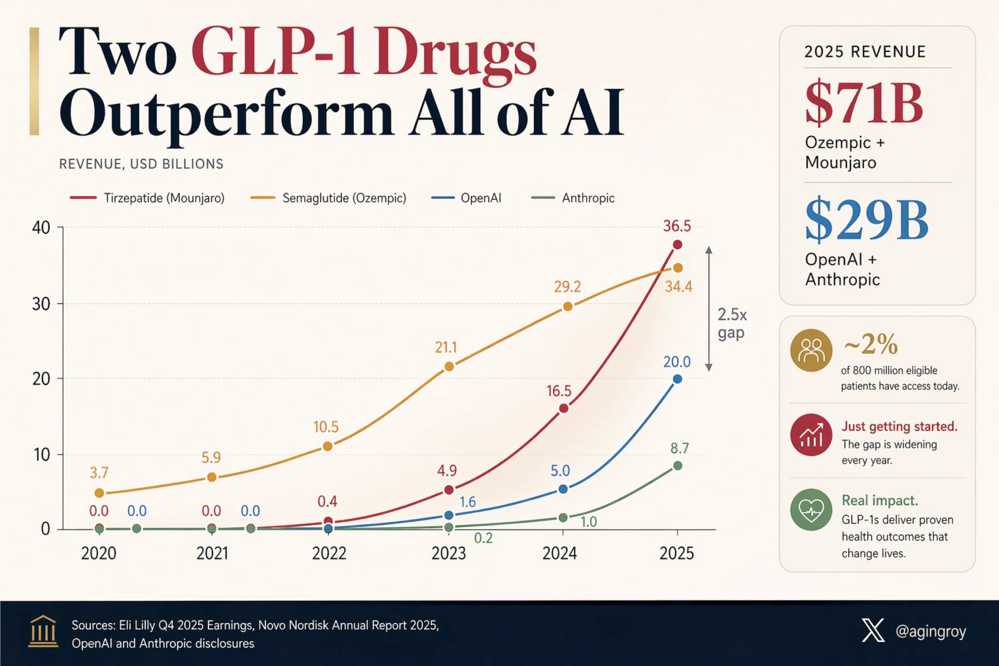
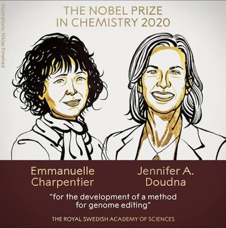
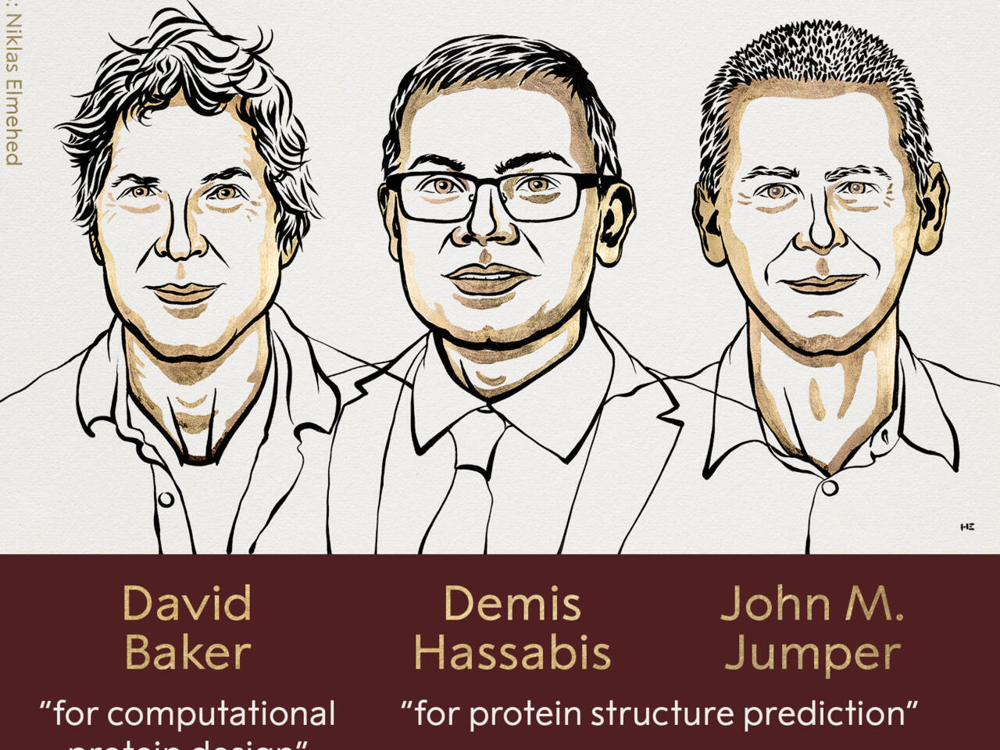
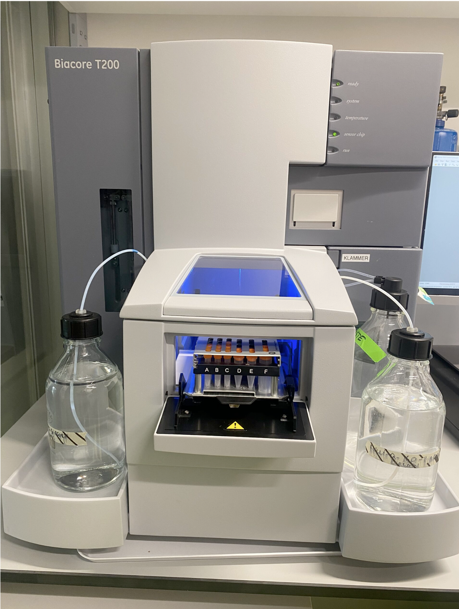

Tecnología
MooreLa computación hizo que probar, distribuir y mejorar fuese cada vez más barato.
Dos curvas de productividad
MooreLa computación hizo que probar, distribuir y mejorar fuese cada vez más barato.
EroomDescubrir fármacos exige más capital y tarda más en convertir hipótesis en evidencia clínica.
¿Puede la IA introducir una curva tipo Moore en partes de la ciencia experimental sin ignorar que la clínica sigue siendo el filtro duro?
Eroom's Law: Scannell et al., Nature Reviews Drug Discovery, 2012. Slide conceptual; no implica que toda la biología pueda comportarse como software.

$T+La demanda sanitaria no es pequeña. El problema no es mercado, es productividad de I+D.
Tiempo largo, capital intensivo, regulación, endpoints clínicos y alta tasa de fracaso.
¿Qué tendría que cambiar para que ciencia dura se parezca más a infraestructura tecnológica?
Donde el feedback es más rápido y digitalizable, la IA ya mejora velocidad de exploración.
La validación que cambiaría múltiplos no es otra demo preclínica, es mejora repetible en humanos.
PreclínicaDiseño, ranking, optimización y selección de candidatos.
HumanoEficacia, toxicidad, endpoints, reclutamiento, regulación y reembolso.
Cuando mejores modelos produzcan mejores tasas clínicas, no solo mejores candidatos.

La IA ayuda, pero el maximalismo LLM puede infravalorar lo que la biología exige: mecanismos, causalidad, contexto celular, validación experimental y traducción clínica.

Si los modelos pueden capturar estructura, función y diseño biológico, drug discovery puede moverse hacia modelos para predecir toxicidad, mecanismo, dosificación, selección de pacientes, etc.
La tensión no es IA sí o no. Es si la IA se queda como copiloto o se convierte en infraestructura de ciencia experimental.

La ventaja aparece cuando el coste marginal de aprender baja y cada experimento mejora la siguiente decisión.
Bio será más invertible cuando cada ciclo reduzca incertidumbre y aumente el valor del siguiente programa.
Datos propietarios, loops experimentales, assets o royalties, y capacidad de convertir aprendizaje en propiedad.
Software sin datos, IA como marketing, laboratorios sin readouts claros, IP débil o ciencia sin camino regulatorio.
No basta con conectar conocimiento: la ventaja aparece cuando cada experimento mejora el siguiente programa.
VISIÓN: CREACIÓN TERAPÉUTICA AGÉNTICA.
DE INTENCIÓN BIOLÓGICA A MEDICINA VALIDADA.
Nanomind orquesta modelos frontera, agentes especializados, feedback experimental, contexto biológico, estrategia de IP, mercado e indicación para guiar cada programa: target, diseño molecular, validación, desarrollabilidad y pacientes.